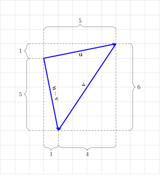
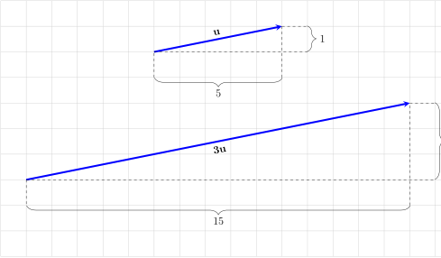
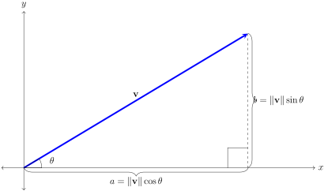

Section 4.3 Vectors
The Hawai`iloa is a double-hulled voyaging canoe whose construction was intended to recover knowledge and skills associated with traditional Hawaiian canoe-building with native materials. A major problem arose in 1989-1990 when it was determined that the koa forests in Hawai`i no longer had trees large enough to construct such a canoe so the search had to be extended beyond Hawai‘i. Using trees that didn’t originate in Hawai`i still followed the theme of using traditional materials because during storms, large trees from the Pacific Coast of North American have been known to have been swept into the Pacific Ocean and float to islands such as Hawai`i. Such trees have traditionally been used for canoe building across the Pacific. Two trees, each 200 feet high and over 400 years old were located in Shelikof Island in Soda Bay, Prince of Wales Island, west of Ketchikan, Alaska. Traditional Hawaiian and Tlingit tree cutting ceremonies were then performed to ask permission to take the trees to build a waʻa. The trees were then cut and the logs shipped to Hawai`i. The path of these logs from Alaska to Hawai`i is known as a vector, because it has both a length and a direction. We represent a vector with an arrow to indicate its direction. The length of the arrow represents the magnitude of the vector. See Figure 4.3.1. Many things in physics can be represented with vectors.

Subsection 4.3.1 Geometric Vectors
The vector whose path begins at the point \(P\) and ends at the point \(Q\) is written as \(\overrightarrow{PQ}\text{,}\) where the arrow on top indicates the direction. The point \(P\) is called the initial point and the point \(Q\) is called the terminal point of the vector \(\overrightarrow{PQ}\text{.}\) The magnitude of \(\overrightarrow{PQ}\) is the length or distance and is written as \(\|\overrightarrow{PQ}\|\text{.}\) We can also think of \(\overrightarrow{PQ}\) as the displacement. The direction of \(\overrightarrow{PQ}\) is from \(P\) to \(Q\text{.}\)
The zero vector, written as \(\mathbf{0}\) or \({\overrightarrow{\mathbf{0}}}\text{,}\) is a vector with zero magnitude, meaning it has no displacement and it has no direction.
It is important to note that a vector only requires a magnitude and direction, but it does not have a unique location. Thus, as long as the magnitude and direction aren't changed, a vector may be translated or moved from one place to another. As a result, if two vectors \(\mathbf{v}\) and \(\mathbf{w}\) have the same direction and the same magnitude, then they are equal, written as
Example 4.3.2.
The average distanced travled by a waʻa in one day of sailing is 120 nautical miles. If the Nāmāhoe departed from Kaua`i, the Hawai`iloa departed from Oʻahu, the Moʻokiha departed from Maui, and the Makali`i departed from Hawai`i and all waʻa traveled for three days (\(120\times3=360\) miles) in the direction of Manu Koʻolau (NE), the resulting vectors from each waʻa will be equal since they all have the same direction (NE) and the same magnitude (360 miles). See Figure 4.3.3.

Subsection 4.3.2 Vector Addition
Example 4.3.4.
If you stand in Tahiti and face Hawai`i, you would be looking at the Haka Hoʻolua house or north by west (NbW). When the Hōkūleʻa sails from Tahiti to return home to Hawai`i, the navigator does not point Hōkūleʻa directly to Hawai`i and sail to the Haka Hoʻolua house. Instead, Hōkūleʻa sails north. When the navigator has determined that Hōkūleʻa has reached the latitude of Hawai`i, about \(20^{\circ}\) N, the wa‘a then turns west to come home. This method of navigation is called latitude sailing. For this strategy to work, the navigator must know their latitude which can be determined by (1) measuring altitude of Hokupa’a (North Star); (2) measuring the altitude of stars as they cross the meridian; or (3) watching for pairs of stars that rise or set together.
We can represent Hōkūle‘a’s path north by the vector \(\overrightarrow{PQ}\) and the path west by the vector \(\overrightarrow{QR}\) then the resulting displacement is the same as if you were to sail directly from Tahiti to Hawai`i, represented by \(\overrightarrow{PR}\text{.}\) See Figure 4.3.5. We call the vector \(\overrightarrow{PR}\) the sum of the vectors \(\overrightarrow{PQ}\) and \(\overrightarrow{QR}\) and we write
To find the sum of vectors \(\mathbf{u}\) and \(\mathbf{v}\text{,}\) we place the initial point of the second vector at the terminal (or end) point of the first vector. The vector formed from the initial point of the first vector to the terminal point of the second vector is the the sum of the two vectors, \(\mathbf{u}+\mathbf{v}\text{.}\) See Figure 4.3.6. Since vectors can be translated, any two vectors can be added. Notice that adding the vector \(\mathbf{v}\) to \(\mathbf{u}\) results in the same vector obtained by adding \(\mathbf{u}\) to \(\mathbf{v}\text{.}\) Thus \(\mathbf{u}+\mathbf{v}=\mathbf{v}+\mathbf{u}\text{.}\)
Subsection 4.3.3 Multiplying Vectors by a Scalar
If a waʻa sails for two days at 5 knots, it will have covered 240 miles. This distance traveled is known as the magnitude of the vector and it is given as a real number. These real numbers are often referred to as scalars. The magnitude of the vector that represents a wa‘a’s path for two days will be twice as big as the magnitude of the vector that represents the path a waʻa sailed for only one day. We now can define how we multiply a vector by a scalar.
Definition 4.3.7.
If \(c\) is a scalar (real number) and \(\mathbf{v}\) is a vector, then the scalar multiple \(c\mathbf{v}\) has magnitude \(c\) times the magnitude of \(\mathbf{v}\) (\(|c|\|\mathbf{v}\|\)) and if
\(c>0\) has the same direction as \(\mathbf{v}\)
\(c\lt 0\) has the opposite direction as \(\mathbf{v}\)
If \(c=0\) or \(\mathbf{v}=\mathbf{0}\text{,}\) then \(c\mathbf{v}=\mathbf{0}\text{.}\)
Subsection 4.3.4 Vector Subtraction
\begin{mybox}[Vector Subtraction] Vector subtraction is defined to be the sum of one vector with the negative of another vector. In other words, \(\mathbf{u}-\mathbf{v}=\mathbf{u}+(-\mathbf{v})\text{.}\) \end{mybox}
Subsection 4.3.5 Vectors in Coordinates
\begin{mybox}[Component Form of a Vector] If a vector, \(\mathbf{v}\) has initial point \(P(x_1,y_1)\) and terminal point \(Q(x_2,y_2)\text{,}\) then the following are equivalent ways to write the vector
The coordinates, \(v_x\) and \(v_y\) are scalars (real numbers) and represent the horizontal component, and vertical component of \(\mathbf{v}\text{,}\) respectively. Note \(v_x\) and \(v_y\) are not coordinates. See Figure 4.3.9 \end{mybox}
A vector, \(\mathbf{v}\) with an initial point at \((0,0)\) and terminal point at \((a,b)\) can be written as \(\mathbf{v}=\langle a-0,b-0\rangle=\langle a,b\rangle\text{,}\) and \(\mathbf{v}\) is said to be in standard position. A vector with an initial point at the origin is called the position vector.
Example 4.3.10.
The vector \(\mathbf{v}\) that goes from \(P(1,7)\) to \(Q(11,2)\) can be expressed as
Definition 4.3.11.
The zero vector is the vector \(\mathbf{0}=\langle0,0\rangle\)
Definition 4.3.12.
Given a vector \(\mathbf{v}=\langle v_x,v_y\rangle\text{,}\) the magnitude or length is
This formula is derived from the Pythagorean Theorem or the distance formula.
Definition 4.3.13.
A vector \(\mathbf{u}\) with magnitude 1, \(\|\mathbf{u}\|=1\text{,}\) is called a unit vector
Example 4.3.14.
Find the magnitude of the vector \(\mathbf{v}=\langle10,-5\rangle\)
Definition 4.3.15. Algebraic operations of vectors.
If \(\mathbf{u}=\langle u_x,u_y\rangle\text{,}\) \(\mathbf{v}=\langle v_x,v_y\rangle\text{,}\) and \(c\) is a scalar, then
Example 4.3.16.
Let \(\mathbf{u}=\langle 5, 1\rangle\) and \(\mathbf{v}=\langle 4, 6\rangle\text{.}\) Compute the following:
\(\displaystyle \mathbf{u}+\mathbf{v}\)
\(\displaystyle \mathbf{u}-\mathbf{v}\)
\(\displaystyle 3\mathbf{u}\)
\(\mathbf{u}+\mathbf{v}=\langle 5, 1\rangle+\langle 4, 6\rangle=\langle 5+4,1+6\rangle=\langle 9,7\rangle\)
Figure 4.3.17. \(\mathbf{u}+\mathbf{v}\) \(\mathbf{u}-\mathbf{v}=\langle 5, 1\rangle-\langle 4, 6\rangle=\langle 5-4,1-6\rangle=\langle 1,-5\rangle\)
Figure 4.3.18. \(\mathbf{u}-\mathbf{v}\) \(3\mathbf{u}=3\langle 5,1\rangle=\langle 3\cdot5,3\cdot1\rangle=\langle 15,3\rangle\)
Figure 4.3.19. \(3\mathbf{u}\)
Subsection 4.3.6 Properties of Addition, Length, and Scalar Multiplication
\begin{mybox}[Properties of Vectors] If \(\mathbf{u}\text{,}\) \(\mathbf{v}\text{,}\) and \(\mathbf{w}\) are vectors, \(\mathbf{0}\) is the zero vector, and \(c\) and \(d\) are scalars, then
Vector Addition
\(\displaystyle \mathbf{u}+\mathbf{v}=\mathbf{v}+\mathbf{u}\)
\(\displaystyle \mathbf{u}+(\mathbf{v}+\mathbf{w})=(\mathbf{u}+\mathbf{v})+\mathbf{w}\)
\(\displaystyle \mathbf{u}+\mathbf{0}=\mathbf{u}\)
\(\displaystyle \mathbf{u}+(-\mathbf{u})=\mathbf{0}\)
Length of a Vector
\(\displaystyle \|c\mathbf{u}\|=|c|\|\mathbf{u}\|\)
Scalar Multiplication
\(\displaystyle c(\mathbf{u}+\mathbf{v})=c\mathbf{u}+c\mathbf{v}\)
\(\displaystyle (c+d)\mathbf{u}=c\mathbf{u}+d\mathbf{u}\)
\(\displaystyle (cd)\mathbf{u}=c(d\mathbf{u})=d(c\mathbf{u})\)
\(\displaystyle 1\mathbf{u}=\mathbf{u}\)
\(\displaystyle 0\mathbf{u}=\mathbf{0}\)
\(\displaystyle c\mathbf{0}=\mathbf{0}\)
\end{mybox}
Example 4.3.20.
Prove 1, 5, 6 and leave the rest as exercises
solution
Subsection 4.3.7 Finding a Unit Vector
Sometimes it is useful to look at problems involving vectors in terms of a vector in the same direction, but with a magnitude of one. Recall that a unit vector \(\mathbf{u}\) is a vector whose length is one, \(\|\mathbf{u}\|=1\text{.}\) To find a unit vector in the same direction, you will need to divide that vector by its length or magnitude. \begin{mybox} Let \(\mathbf{v}\) be any vector. The vector
is a unit vector that has the same direction as \(\mathbf{v}\text{.}\) \end{mybox}
Example 4.3.21.
Find the unit vector that has the same direction as \(\mathbf{v}=\langle10,-5\rangle\)
From Example 4.3.14, we know \(\|\mathbf{v}\|=5\sqrt{5}\text{.}\) Then
We can verify that this is in fact a unit vector by computing the magnitude:
Two useful unit vectors are \(\mathbf{i}\) and \(\mathbf{j}\text{.}\) The vector \(\mathbf{i}\) represents the unit vector whose direction is along the positive \(x\)-axis and the vector \(\mathbf{j}\) represents the unit vector whose direction is along the positive \(y\)-axis.
Definition 4.3.22.
The unit vectors \(\mathbf{i}\) and \(\mathbf{j}\) are defined as
We can now represent any vector using the unit vectors \(\mathbf{i}\) and \(\mathbf{j}\text{.}\)
Definition 4.3.23.
Let \(\mathbf{v}\) be any vector. Then we can express \(\mathbf{v}\) in terms of its horizontal and vertical components
Subsection 4.3.8 Components and Direction
Recall that a vector is composed of a direction and magnitude. Earlier in this section we learned how to calculate the magnitude. Now we will discuss how to calculate the direction.
Definition 4.3.24.
Let \(\mathbf{v}=\langle v_x,v_y\rangle\) be a vector with magnitude \(\|\mathbf{v}\|\text{.}\) The angle \(\theta\) represents the direction of \(\mathbf{v}\) and is the smallest positive angle in standard position formed by the positive \(x\)-axis and \(\mathbf{v}\) (\(0^{\circ}\leq\theta\leq360^{\circ}\)). The direction, \(\theta\) and can be calculated by
We now have all the information needed to write a vector. \begin{mybox} Using Right Triangle Trigonometry we can solve for the horizontal and vertical components, \(v_x\) and \(v_y\text{,}\) respectively
This allows us to express \(\mathbf{v}\) as
\end{mybox}
Subsection 4.3.9 Velocity
Vectors can be used to represented many physical objects. For example, the velocity of a moving waʻa is presented by a vector whose direction is the direction of motion and whose magnitude is the speed of the waʻa. This vector is called the velocity vector and can also be used to describe other physical objects and phenomena such as wind and currents.
Example 4.3.26.
Wind is blowing from the house Nā Leo Hoʻolua (N\(22.5^{\circ}\)W) at 10 knots. Write the wind velocity as a vector \(\mathbf{v}\text{.}\)
First we note that since the velocity is 10 knots, we have \(\|\mathbf{v}\|=10\text{.}\) Next we will need to find the direction. Since \(\theta\) is measured from the positive \(x\)-axis, we see that
To find the vector, will need the horizontal and vertical components.
Thus
Example 4.3.27.
An estimate for the speed of Hikianalia is \(\frac{1}{3}\) the speed of the wind on a beam reach (wind is at a right angle to the waʻa). So if Hikianalia is sailing with winds at 15 knots, the speed of the wa‘a is \(\frac{1}{3}\cdot15=5\) knots. However, if Hikianalia is sailing directly into a current of 2 knots, Hikianalia’s actual speed will be slowed down to 3 knots.

Example 4.3.29. Leeway.
It is very rare that a wa‘a sailing on the ocean will be moving in the same direction it’s pointed. One reason for this is that crosswind can push the waʻa off its course. The angle of displacement between the apparent heading of the waʻa and the direction the waʻa is actually traveling through the water is referred to as leeway. Using vector addition, we can determine where the waʻa will actually travel. However, on the waʻa, the navigator can determine the leeway by observing the angle from the wake behind the waʻa and the apparent direction the waʻa is pointed towards.

In order to compensate for the wind, the navigator must steer the waʻa into the wind by the same angle as the leeway angle. For example, if the waʻa needs to sail in the direction of Manu Malanai (SE) and the wind is pushing the waʻa one house further south, the waʻa will move towards Nālani Malanai (SEbS). To maintain the course of Manu Malanai, the navigator must then point the waʻa one house north with an apparent heading in the house of Noio Malanai (SEbE) in order for the actual heading to be in the house of Manu Malanai (SE).